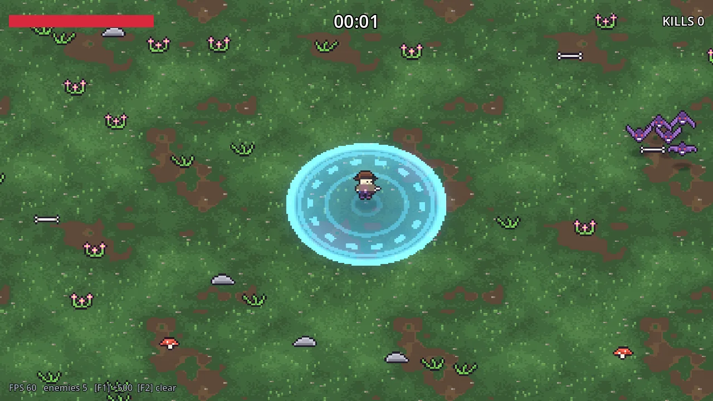
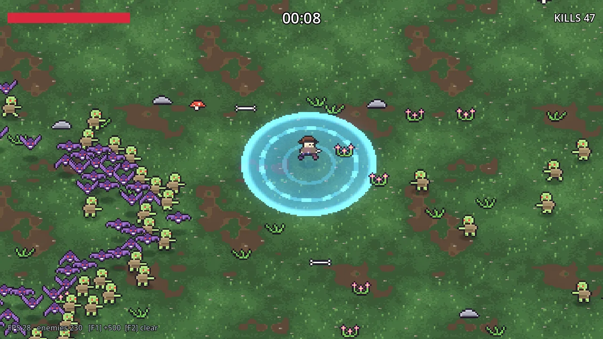
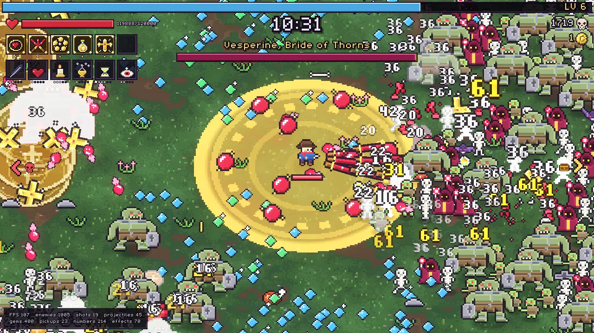

Dunia 2.5D dan EnemySwarm
Bab paling penting. Di sini fondasi seluruh game dipasang: dunia 3D yang dilihat dari kamera miring, sprite pixel yang berdiri menghadap kamera, dan cara menggerakkan serta menggambar ribuan musuh tanpa membuat ribuan node.


spawn_ring(250).Konsep: Node, Scene, dan Resource
Node adalah satuan terkecil di Godot: sesuatu yang punya nama, posisi di pohon, dan (opsional) skrip. Scene adalah pohon node yang disimpan ke file .tscn dan bisa dipakai berulang (di-instance), seperti player.tscn yang dimasukkan ke main.tscn. Resource adalah data tanpa posisi di pohon: tekstur, mesh, material, atau kelas data milikmu sendiri seperti EnemyData. Resource disimpan sebagai .tres dan dibagi oleh siapa pun yang memuatnya.
Aturan praktis di proyek ini: sesuatu yang perlu ada di dunia dan jumlahnya sedikit (pemain, kamera, HUD) = node. Sesuatu yang jumlahnya ribuan (musuh, proyektil, gem) = baris data di array, digambar oleh satu node. Sesuatu yang mendeskripsikan (statistik ghoul, statistik senjata) = Resource.
Gameplay di 2D, tampilan di 3D
Knellbound terlihat 3D, tapi semua logika berjalan di bidang datar. Posisi pemain adalah pos2: Vector2; komponen x = sumbu X dunia, komponen y = sumbu Z dunia. Node 3D hanya menyalin nilai itu untuk digambar:
105func tick(dt: float) -> void:
106 var input := Input.get_vector(&"move_left", &"move_right", &"move_up", &"move_down")
107 pos2 += input * stats.value(Stats.Id.MOVE_SPEED) * dt
108 position = Vector3(pos2.x, 0.0, pos2.y)Keuntungannya besar: jarak, tabrakan, dan arah semua memakai Vector2 (dua angka, bukan tiga), tidak perlu fisika 3D, dan tidak pernah ada musuh yang "jatuh" atau tersangkut di lantai. Ketinggian (proyektil melayang, vial yang dilempar melengkung) hanya ditambahkan saat menulis buffer gambar.
Langkah 1: scene main.tscn
- , pilih 3D Scene. Rename root jadi
Main. Simpan sebagaiscenes/main.tscn. Di pilih file ini (Fase 7 menggantinya dengan title). - Tambah child WorldEnvironment. Di Inspector buat New Environment: Background Mode
Custom Colorgelap, Ambient Light dari warna, TonemapFilmic, aktifkan Glow. Glow penting nanti: warna di atas 1,0 (aura, proyektil, outline elite) akan berpendar. - Tambah DirectionalLight3D bernama
Sun. Sprite memakai shaderunshaded, jadi lampu hanya memengaruhi tanah. - Tambah MeshInstance3D bernama
Ground, Mesh = PlaneMesh 160×160. Material: StandardMaterial3D, Albedo Texture =art/tiles/grass.png, UV1 Triplanar + World Triplanar aktif, UV1 scale 0,125, Texture FilterNearest.
63[sub_resource type="StandardMaterial3D" id="StandardMaterial3D_ground"]
64albedo_texture = ExtResource("11_grass")
65roughness = 1.0
66uv1_scale = Vector3(0.125, 0.125, 0.125)
67uv1_triplanar = true
68uv1_world_triplanar = true
69texture_filter = 0
70
71[sub_resource type="PlaneMesh" id="PlaneMesh_ground"]
72material = SubResource("StandardMaterial3D_ground")
73size = Vector2(160, 160)Trik tanah tak berujung: plane 160×160 digeser mengikuti pemain tiap frame (ground.position = Vector3(player.pos2.x, 0, player.pos2.y) di Game._process). Karena UV-nya world triplanar, tekstur dihitung dari posisi dunia, bukan dari posisi mesh. Mesh bergerak, rumputnya diam. Pemain tidak pernah melihat tepi.
Langkah 2: kamera orthographic miring
size pada kamera ortho = tinggi area yang terlihat, dalam unit dunia.Buat node Node3D bernama CameraRig, beri child Camera3D, lalu tempel skrip core/camera_rig.gd. Rig berada di tanah mengikuti pemain; kameranya duduk di ujung "lengan" yang miring.
6@export_range(20.0, 80.0) var pitch_degrees := 50.0
7@export var distance := 30.0
8@export var use_orthographic := true
9@export var ortho_size := 13.0
10@export_range(10.0, 60.0) var perspective_fov := 28.0
11@export var follow_sharpness := 12.0
12@export var max_shake_offset := 0.35
13
14## Off = add_shake() does nothing (Options > Screen shake; set by Game).
15var shake_enabled := true
16
17var _trauma := 0.0
18
19@onready var camera: Camera3D = $Camera3D
20
21
22func _ready() -> void:
23 apply_settings()
24
25
26func apply_settings() -> void:
27 var p := deg_to_rad(pitch_degrees)
28 camera.position = Vector3(0.0, sin(p) * distance, cos(p) * distance)
29 camera.rotation = Vector3(-p, 0.0, 0.0)
30 camera.far = distance * 4.0
31 if use_orthographic:
32 camera.projection = Camera3D.PROJECTION_ORTHOGONAL
33 camera.size = ortho_size
34 else:
35 camera.projection = Camera3D.PROJECTION_PERSPECTIVE
36 camera.fov = perspective_fov- 28Dengan pitch
pdan jarak 30, kamera beradasin(p)·30di atas dancos(p)·30di belakang rig. Itu trigonometri biasa: sisi segitiga siku-siku dengan sudutp. - 29Lalu kamera diputar menunduk sebesar
-pdi sumbu X, sehingga ia menatap tepat ke rig. - 33
ortho_size = 13: layar memperlihatkan 13 unit dunia secara vertikal. Karena 16 piksel = 1 unit dan layar 720 piksel, satu piksel art jadi kira-kira 3 piksel layar.
43func tick(dt: float, target: Vector3) -> void:
44 global_position = global_position.lerp(target, 1.0 - exp(-follow_sharpness * dt))
45 if _trauma > 0.0:
46 _trauma = maxf(0.0, _trauma - dt * 2.5)
47 var s := _trauma * _trauma * max_shake_offset
48 camera.h_offset = randf_range(-s, s)
49 camera.v_offset = randf_range(-s, s)
50 else:
51 camera.h_offset = 0.0
52 camera.v_offset = 0.0Baris 44 adalah pola yang akan sering kamu lihat: lerp dengan faktor 1 - exp(-k·dt). Kalau kamu menulis lerp(target, 0.2) tiap frame, kamera mengikuti lebih cepat di 144 FPS daripada di 60 FPS. Dengan eksponen, hasilnya sama berapa pun FPS-nya: setelah 1 detik selalu tersisa exp(-12) dari jarak awal. Knockback musuh (Fase 1) dan peluruhan shake (Fase 6) memakai ide yang sama.
Langkah 3: pemain sebagai Sprite3D billboard
- Scene baru, root Node3D bernama
Player, simpanplayer/player.tscn, tempelplayer/player.gd. - Child Sprite3D bernama
Sprite: Textureart/sprites/player_hunter.png, Animation → Hframes4, Pixel Size0.0625(= 1/16, jadi 16 px = 1 unit), Offset Y9(setengah sel 18 px, supaya kaki berdiri di titik origin), Flags → BillboardY-Billboard, Shaded off, Alpha CutDiscard, Texture FilterNearest. - Di Transform, Scale Y =
1.55. Kenapa? Lihat demo di bawah. - Child MeshInstance3D
Shadow: PlaneMesh 1×0,55 dengan shadershaders/blob_shadow.gdshader, posisi Y 0,02 (sedikit di atas tanah supaya tidak z-fighting). - Child Node3D
Weapons: senjata akan ditambahkan sebagai anak node ini saat run. - Instance
player.tscnkemain.tscn().
24[node name="Sprite" type="Sprite3D" parent="."]
25transform = Transform3D(1, 0, 0, 0, 1.55, 0, 0, 0, 1, 0, 0, 0)
26cast_shadow = 0
27offset = Vector2(0, 9)
28pixel_size = 0.0625
29billboard = 2
30shaded = false
31alpha_cut = 1
32texture_filter = 0
33texture = ExtResource("2_sheet")
34hframes = 4billboard = 2 adalah BILLBOARD_FIXED_Y: sprite hanya berputar di sumbu Y menghadap kamera, tetap tegak lurus tanah. Billboard penuh (1) akan ikut menunduk 50° dan terlihat rebah.
Inilah alasan angka 1.55 muncul di mana-mana (y_stretch di setiap Field, scale Y Sprite3D pemain). Sprite berdiri tegak, kamera menunduk 50°, jadi tinggi sprite di layar menyusut menjadi cos 50° ≈ 0,643. Dikali 1,55 hasilnya ≈ 1,0: piksel art tetap persegi. Tanah sendiri menyusut sin 50° ≈ 0,766, yang memberi kesan perspektif miring. Itulah "2.5D".
Konsep: kenapa musuh bukan node
Cara paling mudah membuat musuh adalah scene enemy.tscn dengan skrip yang punya _process sendiri, lalu di-instance 1000 kali. Untuk 50 musuh itu baik-baik saja. Untuk 1000+ ada tiga biaya yang menumpuk:
- Panggilan per node. Tiap frame Godot memanggil 1000
_process, masing-masing lewat mesin skrip. Biaya panggilan itu sendiri sudah signifikan di GDScript. - Transform per node. Mengubah
positionnode memicu notifikasi transform, update ke RenderingServer, dan pengecekan AABB, satu per musuh. - Memori tersebar. Data tiap musuh ada di objek berbeda di memori. CPU paling cepat membaca data yang berurutan.
Solusinya: simpan semua musuh sebagai baris di beberapa array yang paralel: pos[i], hp[i], speed[i], … semuanya milik musuh ke-i. Satu loop memproses semuanya. Untuk menggambar, satu MultiMesh menerima satu buffer berisi transform semua musuh sekaligus.
Packed array (PackedVector2Array, PackedFloat32Array, PackedInt32Array) menyimpan angka berjejer rapat tanpa pembungkus Variant, jauh lebih hemat dan cepat dibanding Array biasa.
68var types: Array[EnemyData] = []
69var count := 0
70var large_count := 0
71var pos := PackedVector2Array()
72var knock := PackedVector2Array()
73## Hits since Game last read it (one hit sound per frame).
74var hits_this_frame := 0
75var hp := PackedFloat32Array()
76var speed := PackedFloat32Array()
77var radius := PackedFloat32Array()
78var damage := PackedFloat32Array()
79var size := PackedFloat32Array()
80var kb_resist := PackedFloat32Array()
81var flash := PackedFloat32Array()
82var facing := PackedFloat32Array()
83var phase := PackedFloat32Array()
84var row := PackedFloat32Array()
85var type_idx := PackedInt32Array()
86var behavior := PackedInt32Array()
87var flags := PackedInt32Array()
88## DRIFT: unit direction. SCRIPTED: velocity (world units/s).
89var dir := PackedVector2Array()
90## WEAVE: wobble clock. RANGED: seconds to next shot. DRIFT: seconds left.
91var timer := PackedFloat32Array()
92## Stable id per spawned enemy (slots move on removal; ids do not).
93var uid := PackedInt32Array()Packed array di GDScript adalah nilai dengan copy-on-write: var b := pos tidak menyalin datanya, tapi begitu kamu menulis ke b, Godot menyalin seluruh array agar pos tidak ikut berubah. Dua akibat yang terlihat di kode:
- Di
_ready, tiap array di-resizelangsung lewat namanya (bukan lewat loop atas daftar array), karena alias lokal akan meresize salinan. - Di
upload(), penulisan ke_bufdan_large_bufsengaja ditulis dua kali dalam dua cabang alih-alihvar b := _large_buf if … else _buf, karena alias itu akan menyalin buffer tiap frame.
Membaca lewat alias aman dan murah. Itu sebabnya _separate() boleh menulis var starts := _grid.cell_start: hanya dibaca.
114func _ready() -> void:
115 _grid = SpatialHash.new(grid_cell_size)
116 # Packed arrays are copy-on-write values: resize each member directly.
117 pos.resize(capacity)
118 knock.resize(capacity)
119 hp.resize(capacity)
120 speed.resize(capacity)
121 radius.resize(capacity)
122 damage.resize(capacity)
123 size.resize(capacity)
124 kb_resist.resize(capacity)
125 flash.resize(capacity)
126 facing.resize(capacity)
127 phase.resize(capacity)
128 row.resize(capacity)
129 type_idx.resize(capacity)
130 behavior.resize(capacity)
131 flags.resize(capacity)
132 dir.resize(capacity)
133 timer.resize(capacity)
134 uid.resize(capacity)
135 _stamp.resize(capacity)
136 _buf.resize(capacity * STRIDE)
137 _large_buf.resize(large_capacity * STRIDE)Langkah 4: EnemyData sebagai Resource
Statistik musuh tidak ditulis di kode. Buat kelas Resource:
1class_name EnemyData
2extends Resource
3## One enemy archetype. Values are copied into EnemySwarm's packed arrays on
4## spawn, so the hot loop never touches this Resource.
5
6@export var id: StringName
7@export var display_name := ""
8## Row in the enemy sprite sheet (art/sprites/enemies.png).
9@export var sprite_row := 0
10@export var max_hp := 10.0
11@export var move_speed := 2.0
12@export var contact_damage := 5.0
13## Collision radius on the gameplay plane (world units).
14@export var radius := 0.4
15## Multiplier on the billboard size (1.0 = 18px cell at 16px per unit).
16@export var scale := 1.0
17@export_range(0.0, 1.0) var knockback_resist := 0.0
18@export var xp_value := 1.0- Simpan skrip di
enemies/enemy_data.gd. Karena adaclass_name EnemyData, kelas ini terdaftar global. - Di FileSystem klik kanan
data/enemies/→ , cari EnemyData, simpan sebagaighoul.tres. - Klik file itu: semua
@exportmuncul di Inspector. Isi Max HP 12, Move Speed 2,2, Contact Damage 8. - Ulangi untuk
bat.tres(lebih cepat, HP kecil, Sprite Row 1).
1[gd_resource type="Resource" script_class="EnemyData" format=3]
2
3[ext_resource type="Script" path="res://enemies/enemy_data.gd" id="1_script"]
4
5[resource]
6script = ExtResource("1_script")
7id = &"ghoul"
8display_name = "Ghoul"
9behavior = 0
10sprite_row = 0
11max_hp = 12.0
12move_speed = 2.2
13contact_damage = 8.0
14radius = 0.4
15scale = 1.0
16xp_value = 1.0File .tres adalah teks. Kamu bisa membacanya, men-diff-nya, dan menyeimbangkan game tanpa membuka kode. Di Fase 5 EnemyData berkembang (perilaku, tembakan), tapi prinsipnya sama: nilai disalin ke array swarm saat spawn, sehingga loop panas tidak pernah membaca Resource.
Langkah 5: EnemySwarm.spawn dan hapus swap-with-last
Buat Node3D EnemySwarm di main.tscn, tempel enemies/enemy_swarm.gd, isi sheet dengan art/sprites/enemies.png. Slot 0..count-1 hidup. Spawn = tulis ke slot count, lalu count += 1.
126func spawn(data: EnemyData, at: Vector2, hp_mult: float = 1.0) -> int:
127 if count >= capacity:
128 return -1
129 var i := count
130 count += 1
131 type_idx[i] = _type_index(data)
132 pos[i] = at
133 knock[i] = Vector2.ZERO
134 hp[i] = data.max_hp * hp_mult
135 speed[i] = data.move_speed * randf_range(0.9, 1.1)
136 radius[i] = data.radius
137 damage[i] = data.contact_damage
138 size[i] = CELL_WORLD * data.scale
139 kb_resist[i] = data.knockback_resist
140 flash[i] = 0.0
141 facing[i] = 1.0
142 phase[i] = randf() * hframes
143 row[i] = data.sprite_row
144 return i
145
146
147## Move every enemy toward `target`, rebuild the grid, then separate.Menghapus musuh di tengah array dengan remove_at akan menggeser semua elemen di belakangnya: O(n), dan dikali ratusan kematian per detik. Karena urutan musuh tidak berarti apa-apa, cukup salin elemen terakhir ke lubang:
468func flush_dead() -> void:
469 if _dead.is_empty():
470 return
471 _dead.sort()
472 for k in range(_dead.size() - 1, -1, -1):
473 var i := _dead[k]
474 var f := flags[i]
475 if not f & SILENT:
476 enemy_died.emit(pos[i], types[type_idx[i]], f)
477 _remove_at(i)
478 _dead.clear()496func _remove_at(i: int) -> void:
497 if flags[i] & LARGE:
498 large_count -= 1
499 var last := count - 1
500 if i != last:
501 pos[i] = pos[last]
502 knock[i] = knock[last]
503 hp[i] = hp[last]
504 speed[i] = speed[last]
505 radius[i] = radius[last]
506 damage[i] = damage[last]
507 size[i] = size[last]
508 kb_resist[i] = kb_resist[last]
509 flash[i] = flash[last]
510 facing[i] = facing[last]
511 phase[i] = phase[last]
512 row[i] = row[last]
513 type_idx[i] = type_idx[last]
514 behavior[i] = behavior[last]
515 flags[i] = flags[last]
516 dir[i] = dir[last]
517 timer[i] = timer[last]
518 uid[i] = uid[last]
519 count = lastDua hal halus di flush_dead: kematian dikumpulkan dulu di _dead dan diproses setelah semua senjata selesai (supaya indeks tidak berubah di tengah loop senjata), lalu _dead diurutkan dan diproses dari belakang. Kalau slot 3 dan 9 mati dan 9 adalah slot terakhir, menghapus 3 dulu akan memindahkan isi slot 9 ke 3, lalu "hapus 9" menghapus musuh yang salah.
Langkah 6: menggambar dengan MultiMesh
MultiMesh menggambar satu mesh sebanyak N kali dalam satu draw call, masing-masing dengan transform dan data warnanya sendiri. RenderingServer adalah API tingkat rendah tempat node visual Godot sebenarnya berbicara. Dengan RenderingServer.multimesh_set_buffer(rid, buffer) kita mengirim semua data instance dalam satu panggilan, bukan N panggilan set_instance_transform.
167func _make_multimesh(mesh: Mesh, n: int) -> MultiMesh:
168 var mm := MultiMesh.new()
169 mm.transform_format = MultiMesh.TRANSFORM_3D
170 mm.use_custom_data = true
171 mm.mesh = mesh
172 mm.instance_count = n
173 mm.visible_instance_count = 0
174 # Fixed huge AABB: skips per-frame AABB recompute and frustum-cull surprises.
175 mm.custom_aabb = AABB(Vector3(-10000, -10, -10000), Vector3(20000, 50, 20000))
176 var mmi := MultiMeshInstance3D.new()
177 mmi.multimesh = mm
178 mmi.cast_shadow = GeometryInstance3D.SHADOW_CASTING_SETTING_OFF
179 add_child(mmi)
180 return mm- 169
TRANSFORM_3D+use_custom_data: tiap instance = 12 float transform + 4 float custom = 16 float (STRIDE). - 172
instance_countdiset sekali ke kapasitas penuh. Yang berubah tiap frame hanyavisible_instance_count; mengubahinstance_countakan mengalokasikan ulang buffer GPU. - 175
custom_aabbraksasa: Godot tidak perlu menghitung ulang kotak pembatas dari ribuan instance, dan MultiMesh tidak pernah ter-cull karena AABB lama.
Setiap musuh menulis 16 float. Dari 12 float transform, hanya 5 yang berubah: skala di diagonal (indeks 0, 5, 10) dan posisi x, z (indeks 3, 11). Sisanya tetap 0, jadi tidak perlu ditulis ulang. Empat float terakhir menjadi INSTANCE_CUSTOM di shader.
316func upload() -> void:
317 for i in count:
318 var o := i * STRIDE
319 var s := size[i]
320 var p := pos[i]
321 _buf[o] = s
322 _buf[o + 3] = p.x
323 _buf[o + 5] = s
324 _buf[o + 10] = s
325 _buf[o + 11] = p.y
326 _buf[o + 12] = phase[i]
327 _buf[o + 13] = facing[i]
328 _buf[o + 14] = flash[i]
329 _buf[o + 15] = row[i]
330 RenderingServer.multimesh_set_buffer(_mm.get_rid(), _buf)
331 RenderingServer.multimesh_set_buffer(_shadow_mm.get_rid(), _buf)
332 _mm.visible_instance_count = count
333 _shadow_mm.visible_instance_count = countBayangan memakai buffer yang sama (_shadow_mm diberi _buf juga): transformnya identik, dan shader bayangan mengabaikan data custom. Dua MultiMesh, dua panggilan, nol kerja tambahan di CPU.
Shader sprite billboard
MultiMesh tidak punya opsi billboard seperti Sprite3D, jadi shader sprite_billboard.gdshader melakukannya sendiri, sekaligus memilih frame animasi, membalik sprite, dan memberi hit flash dari INSTANCE_CUSTOM.
1// Y-axis billboard sprite for MultiMesh instances.
2// INSTANCE_CUSTOM: x = animation phase (frame offset; with fps = 0 it is the
3// frame index), y = facing (+1 right / -1 left), z = hit flash 0..1,
4// w = sheet row.
5shader_type spatial;
6render_mode unshaded, cull_disabled, depth_draw_opaque, shadows_disabled;
7
8uniform sampler2D sheet : source_color, filter_nearest;
9uniform int hframes = 4;
10uniform int vframes = 1;
11uniform float fps = 8.0;
12uniform float y_stretch = 1.55;
13uniform vec4 flash_color : source_color = vec4(1.0, 1.0, 1.0, 1.0);
14
15varying vec2 v_uv;
16varying float v_flash;
17
18void vertex() {
19 float frame = floor(mod(TIME * fps + INSTANCE_CUSTOM.x, float(hframes)));
20 vec2 uv = UV;
21 if (INSTANCE_CUSTOM.y < 0.0) {
22 uv.x = 1.0 - uv.x;
23 }
24 v_uv = (uv + vec2(frame, INSTANCE_CUSTOM.w)) / vec2(float(hframes), float(vframes));
25 v_flash = INSTANCE_CUSTOM.z;
26
27 VERTEX.y *= y_stretch;
28 // Rotate around world Y to face the camera, keep instance scale.
29 MODELVIEW_MATRIX = VIEW_MATRIX * mat4(
30 vec4(normalize(cross(vec3(0.0, 1.0, 0.0), INV_VIEW_MATRIX[2].xyz)), 0.0),
31 vec4(0.0, 1.0, 0.0, 0.0),
32 vec4(normalize(cross(INV_VIEW_MATRIX[0].xyz, vec3(0.0, 1.0, 0.0))), 0.0),
33 MODEL_MATRIX[3]);
34 MODELVIEW_MATRIX = MODELVIEW_MATRIX * mat4(
35 vec4(length(MODEL_MATRIX[0].xyz), 0.0, 0.0, 0.0),
36 vec4(0.0, length(MODEL_MATRIX[1].xyz), 0.0, 0.0),
37 vec4(0.0, 0.0, length(MODEL_MATRIX[2].xyz), 0.0),
38 vec4(0.0, 0.0, 0.0, 1.0));
39 MODELVIEW_NORMAL_MATRIX = mat3(MODELVIEW_MATRIX);
40}
41
42void fragment() {
43 vec4 c = texture(sheet, v_uv);
44 ALBEDO = mix(c.rgb, flash_color.rgb, v_flash);
45 ALPHA = c.a;
46 ALPHA_SCISSOR_THRESHOLD = 0.5;
47}- vertex
frame = floor(mod(TIME * fps + INSTANCE_CUSTOM.x, hframes)): animasi berjalan di GPU. CPU tidak perlu mengirim frame tiap saat;phaseacak per musuh membuat gerombolan tidak bergerak serempak. - uvKalau
INSTANCE_CUSTOM.y < 0,uv.x = 1 - uv.x: sprite dicerminkan, menghadap kiri. - VERTEX.yDikali
y_stretchsebelum rotasi. - MODELVIEWMatriks dibangun ulang: sumbu X = arah kanan kamera diproyeksikan ke horizontal, sumbu Y = tegak dunia, sumbu Z = cross keduanya, posisi = posisi instance. Lalu dikali skala instance (panjang kolom
MODEL_MATRIX). Hasilnya: billboard sumbu Y untuk setiap instance. - fragment
ALPHA_SCISSOR_THRESHOLD = 0.5: piksel transparan dibuang, sisanya opak. Sprite bisa ditulis ke depth buffer sehingga urutan depan-belakang benar tanpa sorting.
Langkah 7: gerak musuh
Satu loop untuk semua musuh. Versi Fase 1 hanya punya satu perilaku: kejar pemain.
148func tick(dt: float, target: Vector2) -> void:
149 var decay := maxf(0.0, 1.0 - 8.0 * dt)
150 var far2 := relocate_distance * relocate_distance
151 var flash_drop := dt * 8.0
152 for i in count:
153 var p := pos[i]
154 var d := target - p
155 var l2 := d.length_squared()
156 if l2 > far2:
157 # Left behind: wrap around to the side the player is heading to.
158 pos[i] = target + d.normalized() * relocate_radius
159 continue
160 var v := Vector2.ZERO
161 if l2 > 0.0001:
162 v = d * (speed[i] / sqrt(l2))
163 var k := knock[i]
164 pos[i] = p + (v + k) * dt
165 knock[i] = k * decay
166 if d.x > 0.05:
167 facing[i] = 1.0
168 elif d.x < -0.05:
169 facing[i] = -1.0
170 if flash[i] > 0.0:
171 flash[i] = maxf(0.0, flash[i] - flash_drop)
172 _grid.build(pos, count)
173 _separate()- seek
v = d * (speed / |d|): vektor ke pemain dinormalisasi lalu dikali kecepatan. Satu akar kuadrat per musuh. Ini perilaku seek paling dasar. - relokasiMusuh yang tertinggal lebih dari 34 unit dipindah ke cincin 20 unit di sisi seberang, yaitu ke arah pemain sedang berjalan. Pemain yang lari terus tidak meninggalkan ribuan musuh tak berguna di belakang.
- knockKnockback disimpan terpisah dari kecepatan kejar, ditambahkan ke gerak, lalu meluruh
knock *= exp(-knock_decay·dt). - gridSetelah semua bergerak, grid dibangun ulang dan separasi dijalankan.
Langkah 8: SpatialHash
Separasi, damage aura, proyektil, dan tabrakan dengan pemain semuanya bertanya hal yang sama: musuh mana yang dekat titik ini? Mengecek semua musuh berarti O(n) per pertanyaan; separasi (setiap musuh bertanya) menjadi O(n²): 1000 musuh = sejuta cek per frame.
Bagi dunia menjadi sel persegi (1,2 unit). Musuh hanya perlu dicek terhadap musuh di sel yang sama dan sel tetangga. Karena dunia tidak terbatas, koordinat sel (cx, cy) di-hash ke tabel berukuran tetap 4096 bucket: ((cx · 73856093) ^ (cy · 19349663)) & 4095. Dua sel jauh bisa jatuh ke bucket yang sama (tabrakan hash), jadi pemanggil tetap harus mengecek jarak sebenarnya.
1class_name SpatialHash
2extends RefCounted
3## Uniform grid hashed into a fixed bucket table, rebuilt from scratch every
4## frame with a counting sort (no per-cell arrays, no allocations).
5## Items of bucket h are items[cell_start[h] .. cell_start[h + 1]).
6## Different cells may share a bucket, so callers must distance-check.
7
8const BITS := 12
9const SIZE := 1 << BITS
10const MASK := SIZE - 1
11const PRIME_X := 73856093
12const PRIME_Y := 19349663
13
14var cell_size := 1.0
15var inv_cell := 1.0
16var cell_start := PackedInt32Array()
17var items := PackedInt32Array()
18var _bucket := PackedInt32Array()
19
20
21func _init(p_cell_size: float = 1.0) -> void:
22 cell_size = p_cell_size
23 inv_cell = 1.0 / p_cell_size
24 cell_start.resize(SIZE + 1)
25
26
27static func bucket_of(cx: int, cy: int) -> int:
28 return ((cx * PRIME_X) ^ (cy * PRIME_Y)) & MASK
29
30
31func build(positions: PackedVector2Array, count: int) -> void:
32 if items.size() < count:
33 items.resize(count)
34 _bucket.resize(count)
35 cell_start.fill(0)
36 for i in count:
37 var p := positions[i]
38 var h := ((int(floorf(p.x * inv_cell)) * PRIME_X) ^ (int(floorf(p.y * inv_cell)) * PRIME_Y)) & MASK
39 _bucket[i] = h
40 cell_start[h + 1] += 1
41 for h in range(1, SIZE + 1):
42 cell_start[h] += cell_start[h - 1]
43 var cursor := cell_start.slice(0, SIZE)
44 for i in count:
45 var h := _bucket[i]
46 items[cursor[h]] = i
47 cursor[h] += 1Grid dibangun ulang dari nol setiap frame karena semua musuh bergerak. Supaya murah, build() memakai counting sort: tidak ada Array per sel, tidak ada alokasi, hanya tiga loop di atas packed array yang dipakai ulang.
Query lingkaran mengunjungi semua sel yang disentuh kotak pembatas lingkaran (diperbesar dengan radius musuh terbesar), lalu mengecek jarak. Satu musuh bisa ditemukan dua kali kalau dua sel berbagi bucket; _stamp mencegah itu tanpa perlu membersihkan apa pun: setiap query punya nomor baru, dan musuh yang sudah dicap nomor itu dilewati.
383## Alive enemies whose collision circle overlaps the circle (center, r).
384func query_circle(center: Vector2, r: float) -> PackedInt32Array:
385 var out := PackedInt32Array()
386 if count == 0:
387 return out
388 _query_id += 1
389 var qid := _query_id
390 var inv := _grid.inv_cell
391 var reach := r + _max_radius
392 var x0 := int(floorf((center.x - reach) * inv))
393 var x1 := int(floorf((center.x + reach) * inv))
394 var y0 := int(floorf((center.y - reach) * inv))
395 var y1 := int(floorf((center.y + reach) * inv))
396 var starts := _grid.cell_start
397 var items := _grid.items
398 for cy in range(y0, y1 + 1):
399 for cx in range(x0, x1 + 1):
400 var h := ((cx * SpatialHash.PRIME_X) ^ (cy * SpatialHash.PRIME_Y)) & SpatialHash.MASK
401 for s in range(starts[h], starts[h + 1]):
402 var j := items[s]
403 if j >= count or _stamp[j] == qid:
404 continue
405 _stamp[j] = qid
406 if hp[j] <= 0.0:
407 continue
408 var rr := r + radius[j]
409 if pos[j].distance_squared_to(center) <= rr * rr:
410 out.append(j)
411 return outSeparasi yang murah
176func _separate() -> void:
177 _sep_offset = (_sep_offset + 1) % separation_stride
178 var starts := _grid.cell_start
179 var items := _grid.items
180 var inv := _grid.inv_cell
181 var cap := max_neighbors_checked
182 var px := SpatialHash.PRIME_X
183 var py := SpatialHash.PRIME_Y
184 var mask := SpatialHash.MASK
185 for i in range(_sep_offset, count, separation_stride):
186 var p := pos[i]
187 var ri := radius[i]
188 var fx := p.x * inv
189 var fy := p.y * inv
190 var cx := int(floorf(fx))
191 var cy := int(floorf(fy))
192 # Only the 2x2 block of cells nearest to p: with cell >= 2 * radius,
193 # every overlapping neighbour is inside it.
194 var nx := cx + (1 if fx - cx >= 0.5 else -1)
195 var ny := cy + (1 if fy - cy >= 0.5 else -1)
196 var push := Vector2.ZERO
197 var checked := 0
198 for q in 4:
199 var h := (((nx if q & 1 else cx) * px) ^ ((ny if q & 2 else cy) * py)) & mask
200 for s in range(starts[h], starts[h + 1]):
201 var j := items[s]
202 if j == i:
203 continue
204 var dd := p - pos[j]
205 var r := ri + radius[j]
206 var d2 := dd.length_squared()
207 if d2 < r * r:
208 if d2 > 0.000001:
209 var dist := sqrt(d2)
210 push += dd * ((r - dist) / dist)
211 else:
212 push.x += randf() - 0.5
213 checked += 1
214 if checked >= cap:
215 break
216 if checked >= cap:
217 break
218 if push != Vector2.ZERO:
219 pos[i] = p + (push * 0.5).limit_length(0.3)Tiga trik membuat separasi muat dalam anggaran frame:
- Hanya blok 2×2 sel terdekat. Karena sel (1,2) ≥ 2× radius musuh, semua tetangga yang mungkin bertumpuk pasti ada di 2×2 sel di sekitar titik, bukan 3×3. Sel kedua dipilih dari sisi mana titik berada di dalam selnya (
fx - cx >= 0.5). - Maksimal 12 tetangga. Di tengah gerombolan padat, mengecek 12 sudah cukup untuk dorongan yang meyakinkan.
- Bergiliran (stagger).
separation_stride = 2: frame ganjil memproses musuh ganjil, frame genap yang genap. Separasi adalah efek visual yang lembut; setengah frekuensi tidak terlihat bedanya, biayanya setengah.
Dorongan dibatasi limit_length(0.3) per frame supaya musuh tidak "meledak" keluar saat banyak yang bertumpuk sekaligus.
Langkah 9: senjata pertama, Holy Aura
Senjata adalah node anak Player/Weapons, jadi otomatis ikut bergerak bersama pemain. Kelas dasar Weapon di Fase 1 nyaris kosong:
1class_name Weapon
2extends Node3D
3## Base class for weapon behaviours. Weapons are children of Player/Weapons,
4## so they follow the player. Game calls tick() once per frame in a fixed order.
5
6var data: WeaponData
7var level := 1
8
9
10func tick(_dt: float, _game: Game) -> void:
11 passStatistiknya di WeaponData (Resource), perilakunya di scene + skrip turunan Weapon. Scene weapons/aura/aura_weapon.tscn: root Node3D dengan skrip aura, child Visual (MeshInstance3D, PlaneMesh 2×2 rebah, material_override = ShaderMaterial dengan shaders/aura.gdshader).
1extends Weapon
2## Damages every enemy inside a circle around the player on a fixed tick,
3## pushing them outward.
4
5var _timer := 0.0
6var _pulse := 0.0
7var _shown_area := -1.0
8
9@onready var visual: MeshInstance3D = $Visual
10@onready var _mat: ShaderMaterial = visual.material_override
11
12
13func tick(dt: float, game: Game) -> void:
14 var r := data.area
15 if r != _shown_area:
16 _shown_area = r
17 visual.scale = Vector3(r, 1.0, r)
18 _mat.set_shader_parameter("pixel_steps", r * 2.0 * 16.0)
19
20 _pulse = maxf(0.0, _pulse - dt * 4.0)
21 _timer -= dt
22 if _timer <= 0.0:
23 _timer += data.cooldown
24 var origin := game.player.pos2
25 var swarm := game.swarm
26 var hits := swarm.query_circle(origin, r)
27 for i in hits:
28 var dir := (swarm.pos[i] - origin).normalized()
29 swarm.damage_enemy(i, data.damage, dir * data.knockback)
30 if not hits.is_empty():
31 _pulse = 1.0
32 _mat.set_shader_parameter("pulse", _pulse)Damage tidak dicek tiap frame. Aura menunggu timer, lalu satu query_circle mengambil semua musuh di radius. Setiap hit melewati satu fungsi, damage_enemy, yang mengurangi HP, menyalakan hit flash, dan menambah knockback. Semua senjata yang datang kemudian memakai jalur yang sama.
254func damage_enemy(i: int, amount: float, knockback: Vector2 = Vector2.ZERO) -> bool:
255 if hp[i] <= 0.0:
256 return false
257 hp[i] -= amount
258 flash[i] = 1.0
259 knock[i] += knockback * (1.0 - kb_resist[i])
260 if hp[i] <= 0.0:
261 _dead.append(i)
262 return true
263 return false
264
265
266## Push touching enemies out of the player's circle; returns the highest
267## contact damage among them (0 if none).Shader aura menggambar cakram dengan tepi berkuantisasi piksel (pixel_steps = radius × 2 × 16, jadi resolusi cakram cocok dengan 16 px per unit), cincin rune berputar, dan riak. blend_add + warna di atas 1 membuat glow WorldEnvironment menangkapnya.
1// Ground aura disc: pixel-quantised rim, rotating rune ring, outward ripples.
2// Drawn on a 2x2 PlaneMesh scaled by the aura radius.
3shader_type spatial;
4render_mode unshaded, blend_add, depth_draw_never, cull_disabled, shadows_disabled;
5
6uniform vec4 color : source_color = vec4(0.35, 0.8, 1.0, 1.0);
7uniform float intensity = 1.4;
8uniform float pulse = 0.0;
9uniform float pixel_steps = 64.0;
10uniform float rune_count = 14.0;
11
12void fragment() {
13 vec2 uv = (floor(UV * pixel_steps) + 0.5) / pixel_steps;
14 vec2 p = uv * 2.0 - 1.0;
15 float r = length(p);
16 if (r > 1.0) {
17 discard;
18 }
19 float ang = atan(p.y, p.x) / 6.28318 + 0.5;
20 float rim = smoothstep(0.86, 0.94, r);
21 float runes = step(0.55, fract(ang * rune_count + TIME * 0.35))
22 * step(0.66, r) * (1.0 - step(0.74, r));
23 float ripple = step(0.82, fract(r * 3.0 - TIME * 0.8)) * 0.35;
24 float fill = 0.08 + 0.18 * r * r;
25 float a = rim * 0.9 + runes * 0.55 + ripple * r + fill + pulse * 0.35 * (1.0 - r * 0.5);
26 ALBEDO = color.rgb * intensity;
27 ALPHA = clamp(a, 0.0, 1.0);
28}Langkah 10: SpawnDirector sederhana
Fase 1 memakai laju spawn yang naik linear terhadap waktu. Laju dihitung dalam spawn per detik dan dikumpulkan di akumulator: setiap frame _acc += laju · dt, dan selama akumulator ≥ 1 kita spawn satu cluster lalu menguranginya. Dengan cara ini 2,5 spawn/detik benar-benar menghasilkan 2,5 per detik, berapa pun FPS-nya.
6@export var enemy_pool: Array[EnemyData] = []
7@export var spawns_per_second := 2.0
8@export var spawns_per_second_per_minute := 6.0
9@export var hp_growth_per_minute := 0.1
10@export var max_alive := 1500
11@export var spawn_radius := 20.0
12@export var cluster_min := 3
13@export var cluster_max := 7
14
15var _acc := 0.0
16
17
18func tick(dt: float, game: Game) -> void:
19 if enemy_pool.is_empty():
20 return
21 var minutes := game.elapsed / 60.0
22 _acc += (spawns_per_second + spawns_per_second_per_minute * minutes) * dt
23 var hp_mult := 1.0 + hp_growth_per_minute * minutes
24 while _acc >= 1.0:
25 if game.swarm.count >= max_alive:
26 _acc = 0.0
27 return
28 var n := randi_range(cluster_min, cluster_max)
29 _acc -= n
30 spawn_cluster(game, enemy_pool.pick_random(), n, randf() * TAU, hp_mult)
31
32
33func spawn_cluster(game: Game, data: EnemyData, n: int, angle: float, hp_mult: float = 1.0) -> void:
34 var center := game.player.pos2 + Vector2.from_angle(angle) * spawn_radius
35 for k in n:
36 var jitter := Vector2(randf_range(-1.5, 1.5), randf_range(-1.5, 1.5))
37 game.swarm.spawn(data, center + jitter, hp_mult)Musuh muncul berkelompok (3–7) di cincin radius 20, sedikit di luar layar (layar setinggi 13 unit). Fase 5 mengganti ini dengan tabel wave berbasis data.
Langkah 11: Game memegang urutan
Terakhir, tempel core/game.gd di root Main. Inilah versi Fase 1 lengkap: perhatikan bahwa tidak ada sistem lain yang punya _process.
34func _process(delta: float) -> void:
35 if get_tree().paused:
36 return
37 var dt := minf(delta, 1.0 / 20.0)
38 elapsed += dt
39
40 player.tick(dt)
41 swarm.tick(dt, player.pos2)
42
43 var contact := swarm.collide_player(player.pos2, player.radius)
44 if contact > 0.0 and not player.is_dead:
45 var before := player.hp
46 player.take_damage(contact)
47 if player.hp < before:
48 camera_rig.add_shake(contact_shake)
49
50 for w in player.weapons:
51 w.tick(dt, self)
52
53 swarm.flush_dead()
54 director.tick(dt, self)
55 swarm.upload()
56
57 camera_rig.tick(dt, player.global_position)
58 ground.position = Vector3(player.pos2.x, 0.0, player.pos2.y)
59 decor.tick(player.pos2)
60 hud.refresh(self)Kalau tiap node punya _process, urutan pemanggilannya ditentukan posisi di pohon scene. Memindahkan satu node di editor bisa membuat senjata membaca posisi musuh frame lalu, atau gem jatuh di posisi yang sudah diganti slot lain. Dengan satu daftar di Game._process, urutannya terbaca dari atas ke bawah, bisa diuji, dan perubahan disengaja. Bonus: pause cukup satu baris (if get_tree().paused: return), dan hit-stop di Fase 6 cukup melewati semua kecuali kamera.
dt dibatasi 1/20 detik. Kalau game tersendat (misalnya jendela diseret), satu frame panjang tidak membuat musuh melompat menembus pemain.
Dekorasi tak berujung
DecorField menggambar rumput, batu, jamur, dan nisan dengan teknik yang sama (MultiMesh + shader billboard), tapi hanya menulis ulang buffer saat pemain pindah petak 40×40. Satu petak acak diulang 3×3 di sekitar pemain.
54func tick(player_pos: Vector2) -> void:
55 var t := Vector2i(floori(player_pos.x / tile_size), floori(player_pos.y / tile_size))
56 if t == _tile:
57 return
58 _tile = t
59 var basis := Basis.from_scale(Vector3.ONE * CELL_WORLD)
60 var k := 0
61 for ty in range(-1, 2):
62 for tx in range(-1, 2):
63 var ox := (t.x + tx) * tile_size
64 var oz := (t.y + ty) * tile_size
65 for b in per_tile:
66 var p := _base[b]
67 _mm.set_instance_transform(k, Transform3D(basis, Vector3(ox + p.x, 0.0, oz + p.y)))
68 _mm.set_instance_custom_data(k, Color(p.z, _flip[b], 0.0, 0.0))
69 k += 1- Tekan F5. Pemain berjalan dengan WASD, kamera mengikuti dengan halus, rumput tidak pernah habis.
- Musuh muncul dari luar layar, mengejar, tidak menumpuk jadi satu titik, berkedip putih saat kena aura, dan terdorong keluar.
- Label debug menunjukkan FPS dan jumlah musuh. F1 menambah 500 musuh. Di Fase 1 game ini tetap di atas 60 FPS dengan lebih dari 1000 musuh di PC desktop biasa.

- Musuh tidak terlihat sama sekali. Cek urutan:
instance_countsudah diisi sebelummultimesh_set_buffer?visible_instance_countdiisin? Ukuran buffer harus persisinstance_count × 16; kalau tidak, Godot mencetak error di Output. - Semua musuh menumpuk di titik (0,0) atau gepeng. Indeks buffer salah. Posisi ada di indeks 3 dan 11, skala di 0, 5, 10. Pakai demo buffer di atas untuk mengecek.
- Musuh hilang saat kamera bergerak jauh. Lupa
custom_aabb: Godot meng-cull MultiMesh berdasarkan AABB lama. - Sprite terlihat pendek/gepeng.
y_stretchatau scale Y Sprite3D tidak 1,55. - FPS jatuh di 300 musuh. Biasanya ada pembacaan Resource atau alokasi di loop panas (mis.
Arraybaru per musuh). Buka , jalankan, lihat fungsi dengan Self time terbesar.
- Ubah
separation_strideke 1 dan 4 di Inspector EnemySwarm. Bandingkan FPS dengan 1500 musuh dan perhatikan apakah gerombolan terlihat berbeda. - Ubah
pitch_degreesCameraRig ke 35. Sprite akan terlihat terlalu tinggi; hitungy_stretchyang benar (1 / cos 35°) dan terapkan di EnemySwarm dan Sprite3D pemain. - Buat
data/enemies/fast_ghoul.tres(kecepatan 4, HP 6) dan masukkan keenemy_poolSpawnDirector. Tanpa menyentuh kode.